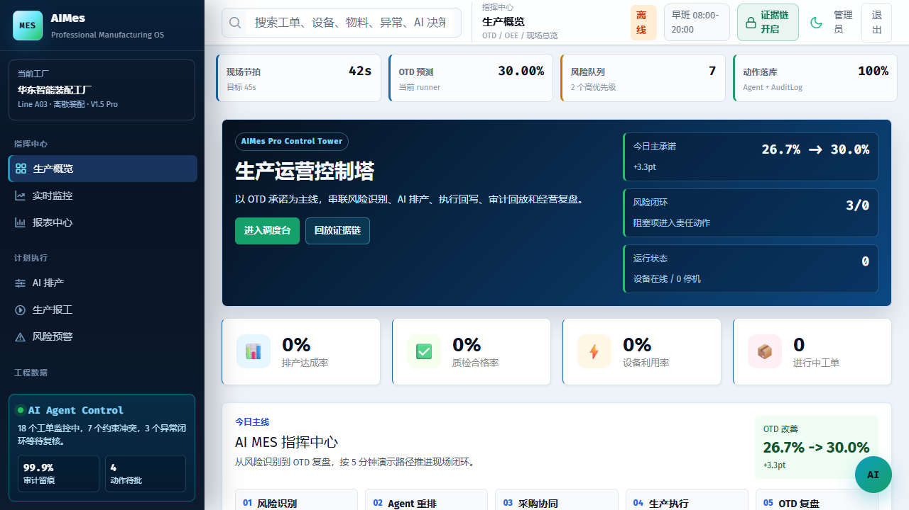
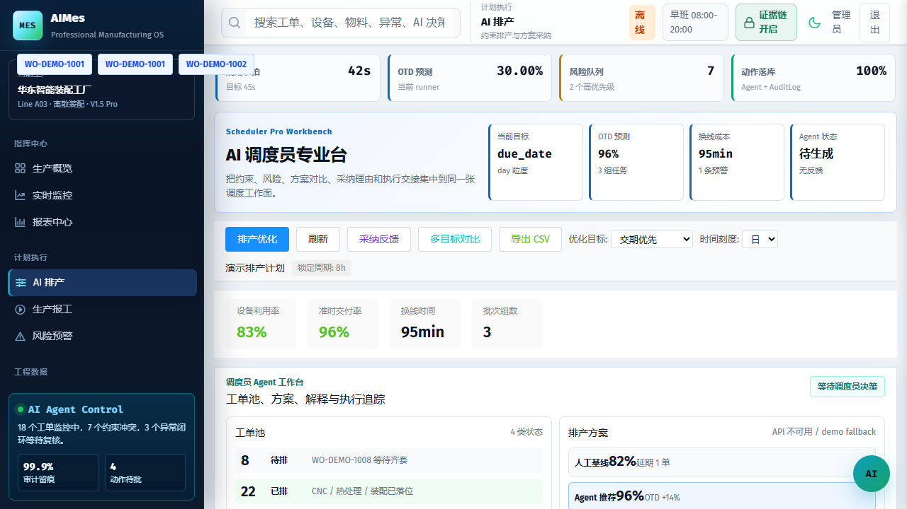
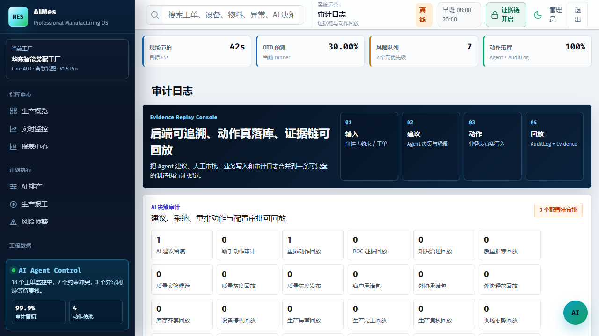
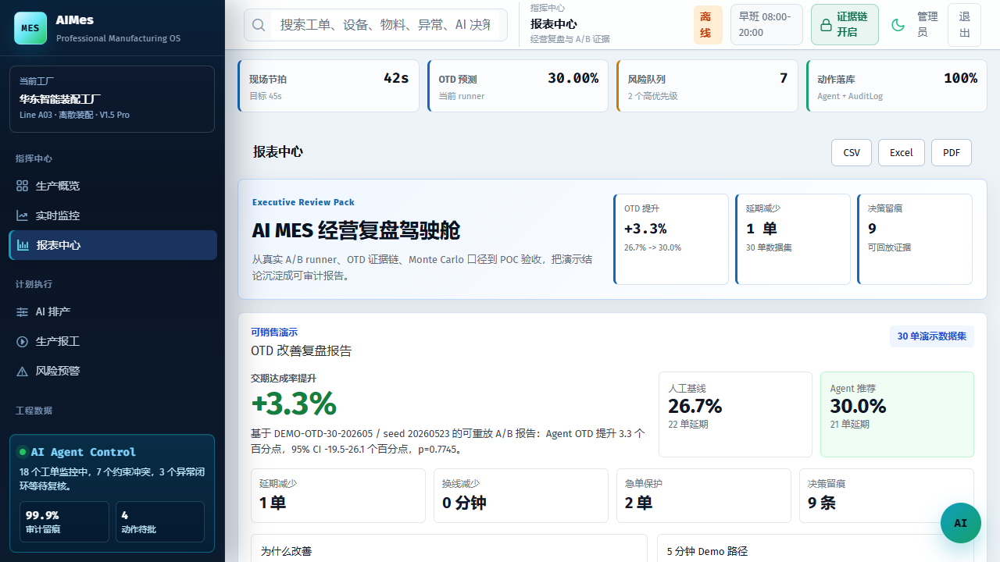

Dashboard Round 2控制塔首屏截图。
把“能演示的 AI MES”视觉升级为适合调度、生产、质量、设备、采购和管理人员使用的专业 MES：高密度扫描、风险判断、动作审批、证据追溯。
本轮采用“专业制造运营控制塔”方向，一屏优先呈现工厂、产线、班次、审计和动作落库状态。
| Token | Value | 用途 |
|---|---|---|
color.bg.default | #eef3f8 | 应用背景 |
color.bg.grid | rgba(15, 23, 42, 0.055) | 工业网格背景 |
color.surface.default | #ffffff | 卡片、面板 |
color.surface.raised | #f8fafc | 输入、表头、弱面板 |
color.sidebar.default | #07111f | 专业深色侧栏 |
color.text.primary | #0b1220 | 主文字 |
color.text.secondary | #5c6b7c | 次级文字 |
color.border.default | #d8e2ee | 普通边框 |
color.status.info | #1368b4 | 信息、计划、链接 |
color.status.success | #16a06a | 闭环、在线、通过 |
color.status.warning | #c77a05 | 预警、瓶颈 |
color.status.danger | #c93c37 | 阻断、失败 |
radius.panel | 8px | 页面面板和卡片 |
shadow.panel | 0 10px 28px rgba(15, 23, 42, 0.08) | 专业浅阴影 |
| 文件 | 变更 |
|---|---|
src/frontend/src/components/layout/MainLayout.vue | 增加工厂上下文、模块上下文、运行状态 ribbon、审计证据链状态。 |
src/frontend/src/components/layout/MainLayout.css | 建立 MES 专业版 CSS token，统一应用壳、卡片、表格、输入、状态色和暗色模式。 |
src/frontend/src/components/layout/nav-items.ts | 为全部导航项补充 icon 和专业模块描述。 |
src/frontend/assets/styles/tailwind.css | 调整侧栏宽度和 shell spacing，匹配专业控制塔密度。 |
当前会话未暴露 Figma MCP 画布写入工具，因此本轮没有直接创建 Figma 文件。后续接入后建议按以下顺序同步。
第二轮把四条主演示链路做成“进入页面即说明专业场景”的工作台首屏。
ops-command-hero：OTD 主承诺、风险闭环、设备运行状态和主动作前置。scheduler-pro-hero：调度目标、OTD 预测、换线成本、Agent 状态前置。audit-pro-hero + 回放面板精修：输入、建议、动作、回放四段证据链。report-pro-hero：OTD 提升、延期减少、决策留痕和经营复盘收束。npm run build 通过；仅有既有 Node DEP0180 警告。dashboard.spec.ts -g "AI MES 指挥中心"：1/1。scheduling.spec.ts -g "通过后端 API 生成并采纳"：1/1。audit.spec.ts 与 report.spec.ts 定向链路均 1/1。



/api 或 /hubs 后端请求。